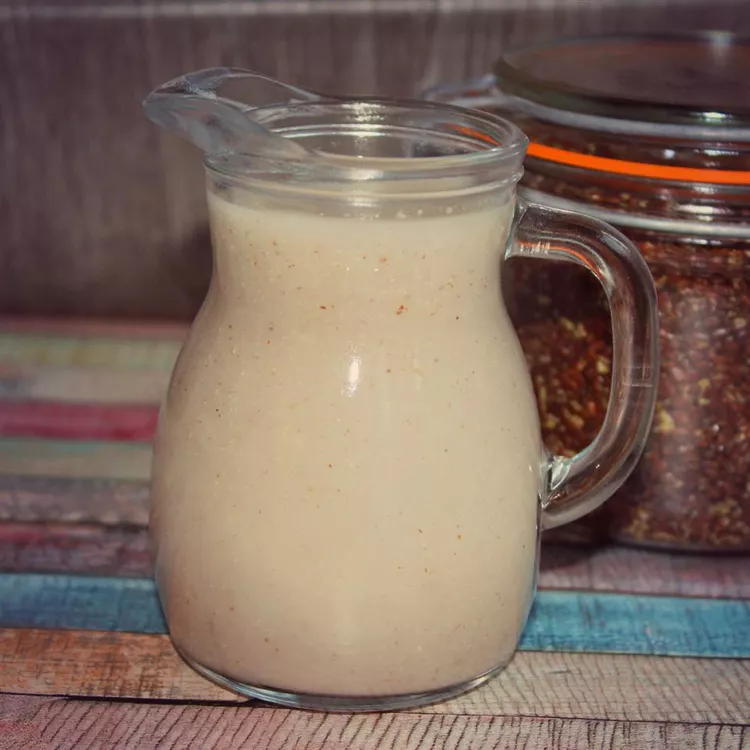

<!DOCTYPE html>
<html lang="en">
<head>
   <meta charset="UTF-8">
   <meta name="viewport" content="width=device-width, initial-scale=1.0">
   <title>Flaxseed Milk</title>
</head>
<body>
   </html><a href="../index.html">Home</a>
   <h1>Flaxseed Milk</h1>
   
   <h2>Homemade Healthy Creamy Flaxseed Milk</h2>
   <h3>Ingredients</h3>
   <ul>
       <li>1/2 cup flaxseed</li>
       <li>4 cups water</li>
       <li>1 tsp of vanilla extract</li>
       <li>2 tbsp of maple syrup</li>
       <li>1/8 tsp of salt</li>
   </ul>
   <h3>Directions</h3>
   <ol>
       <li> <strong>Step 1</strong><p>To a blender add all ingredients. Blend on high for 1 minute, allow to rest for 2 minutes, repeat this process 2 more times.</p></li>
       <li><strong>Step 2</strong><p>Pour into a pitcher through a strainer, cheese cloth, or nut bag. Press or squeeze all liquid into pitcher. Refridgerate for 30 minutes to overnight and enjoy.</p></li>
   </ol>
</body>
